这条路线分成两半：前五天不租车，用高铁、捷运和客运把西半部串起来；后四天在高雄取车，自驾南下再绕上东海岸，一路开回台北。西部城市密、班次多，公共交通反而比开车省事；东海岸和南回公路没有铁路能替代，景点之间动辄几十公里，自驾才是对的打开方式。代价是第 6 天（高雄→垦丁→台东）是全程最累的一天。
前半段 · 公共交通（西部）
第 1 天 · 抵达台北
桃园机场 → 台北市区
- 14:00抵达桃园机场，办理入境（建议留 1 小时）
- 15:30搭机场捷运直达车进台北车站
- 16:30酒店入住，休息一会儿
- 18:30西门町吃晚饭、逛街
- 21:30回酒店，早睡倒时差
西门町
18:30–21:30台北最老牌的年轻人商圈，日据时期就是娱乐街区，如今是潮流、小吃、电影院和街头表演挤在一起的步行区。第一天晚上来这里，吃喝逛都不用走远。
特点
- 步行街为主，晚上灯光最热闹
- 老牌小吃、潮牌店、游戏机店和红楼一带的文创小店并存
项目
- 沿中华路、成都路一带随便逛，吃面线、牛肉面或小吃摊
- 看红楼和周边的创意市集
- 想早睡的话，吃完直接搭捷运回酒店
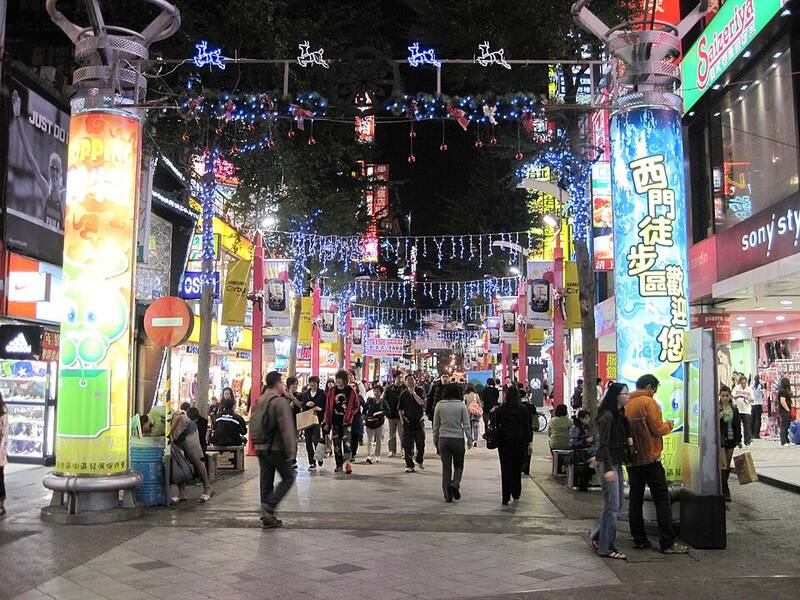
第 2 天 · 台北一整天
故宫 → 大稻埕 → 象山 → 台北101
- 09:00从酒店出发去士林站，转公交去故宫
- 09:30故宫博物院（含翠玉白菜、肉形石）
- 12:30午餐
- 14:00搭捷运到大稻埕，逛迪化街
- 15:30霞海城隍庙
- 16:15搭捷运到象山站
- 16:30爬象山步道，看日落
- 18:00下山，在台北101 周边吃饭、拍夜景
国立故宫博物院
09:30–12:30收藏以清宫旧藏为底，涵盖书画、青铜、玉器、陶瓷等，是华人世界最重要的博物馆之一。馆藏多到一天看不完，抓重点是关键。
特点
- 建筑仿传统宫殿样式，坐落在山脚，外观本身就值得一拍
- 展品定期轮替，同一件展品不一定每次都在展
项目
- 进门先在服务台领导览图，直奔镇馆之宝所在展厅
- 租语音导览或用官方 App 听讲解
- 累了就在馆内的休息区歇一会儿
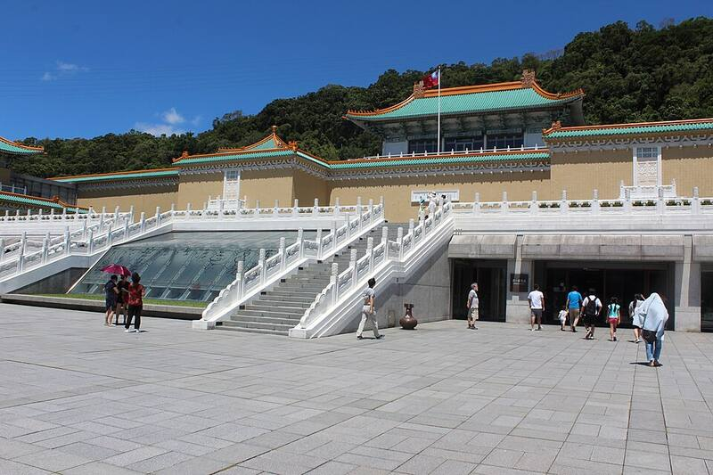
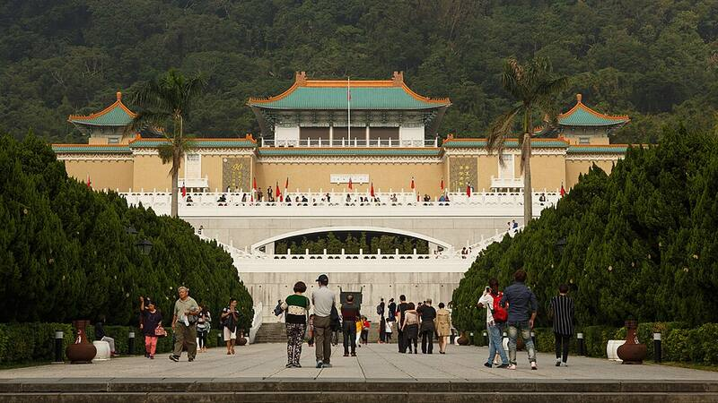
翠玉白菜与肉形石
约 10:00–11:00（在故宫内）故宫最多人排队的两件展品。翠玉白菜用一块半白半绿的翡翠雕成，叶尖停着两只昆虫；肉形石则是天然玛瑙，染色后看上去像一块炖好的东坡肉。
特点
- 都是「顺着材料本身的颜色做设计」的典型，一块石头里藏着两种颜色
- 展品体积不大，要排队到玻璃前才能看清细节
项目
- 早点进馆，趁人少先看这两件
- 仔细看白菜叶尖的蝗虫和螽斯，是整件作品的亮点
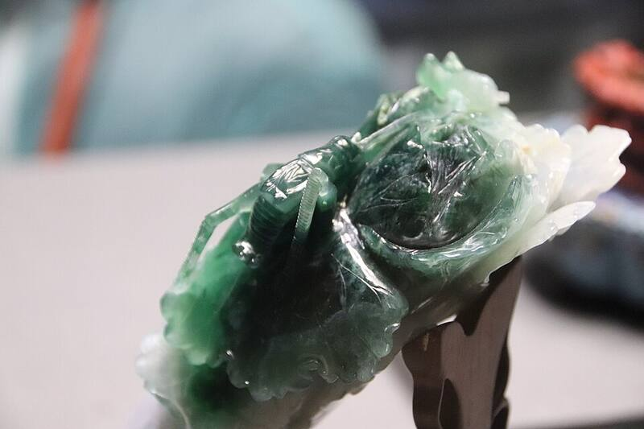
大稻埕·迪化街
14:00–15:30清末到日据时期台北最繁华的贸易港口，如今老街立面保存得很好，南北货、中药材、布料和文创小店混着开。
特点
- 巴洛克风格的老街屋立面，是拍照的主角
- 白天逛、傍晚的光线最好看
项目
- 买干货、茶叶、坚果当伴手礼
- 逛永乐市场的布料区
- 在老宅改造的咖啡馆休息
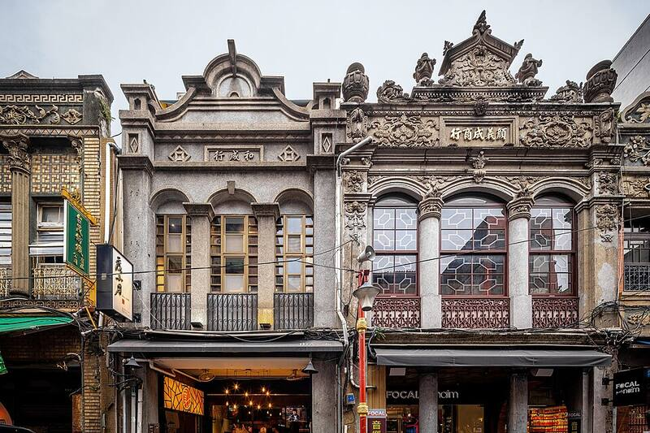
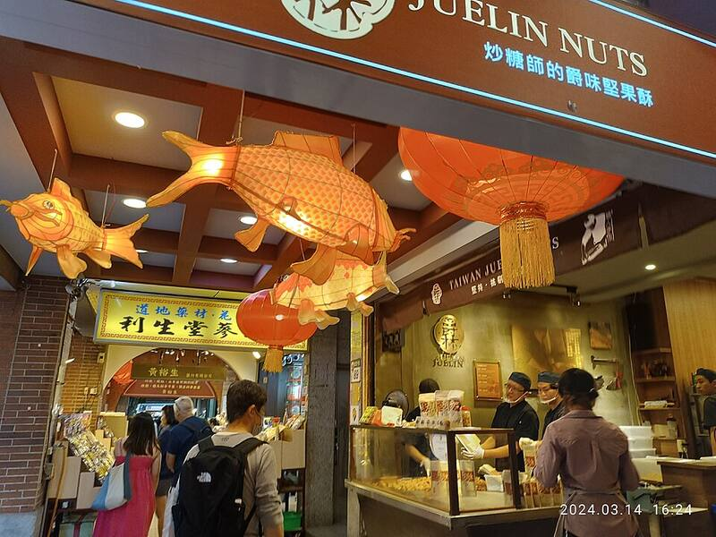
霞海城隍庙
15:30–16:00藏在迪化街旁的小庙，主祀城隍爷，但香火最旺的是里面的月老，是台北最知名的求姻缘庙宇之一。
特点
- 庙小但极热闹，整座庙檐雕饰精细
- 庙里习俗：拿红线、喜糖，对月老许愿
项目
- 按步骤上香、拜月老
- 买红线或结缘品留作纪念
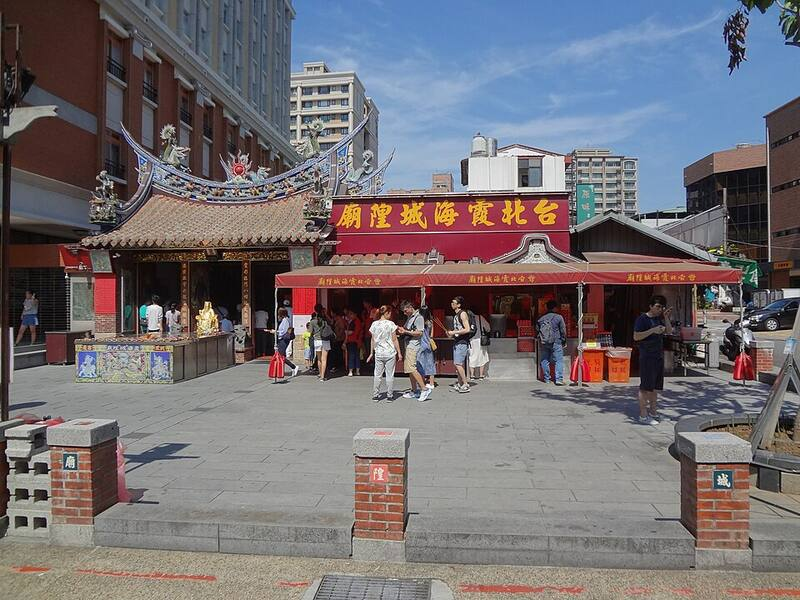
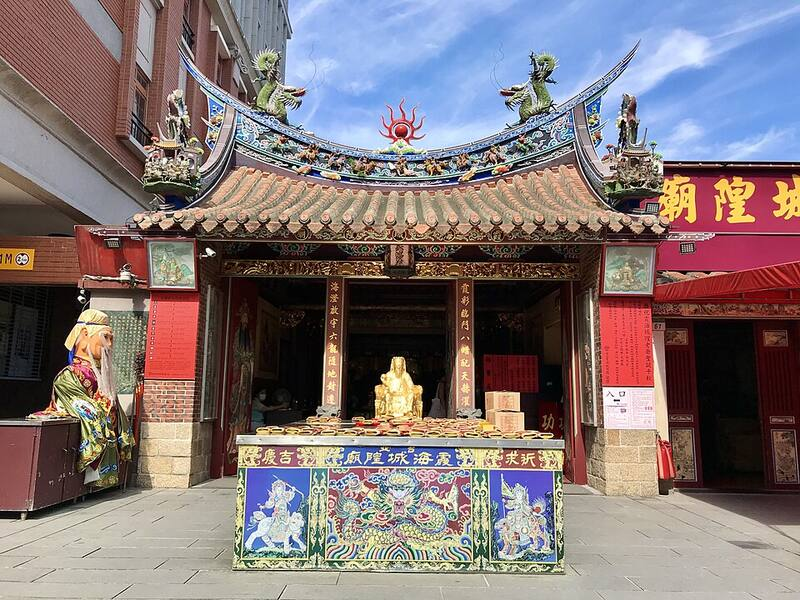
象山步道
16:30–17:30台北拍 101 夜景最经典的机位。从象山站走上去单程二三十分钟，沿途石阶多、坡度偏陡，但上面的平台一次看得到整个台北盆地。
特点
- 石阶步道，脚下要稳
- 日落前后光线最好，傍晚会有不少人上去等天黑
项目
- 在「六巨石」平台看 101 和夜景
- 带一件薄外套，山上风比平地大
- 拍完照走一样的路下山，带手电筒或手机灯
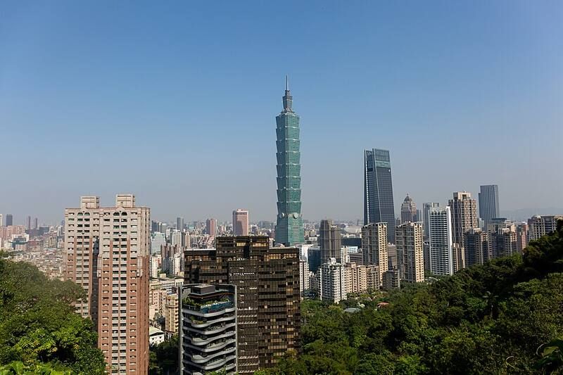
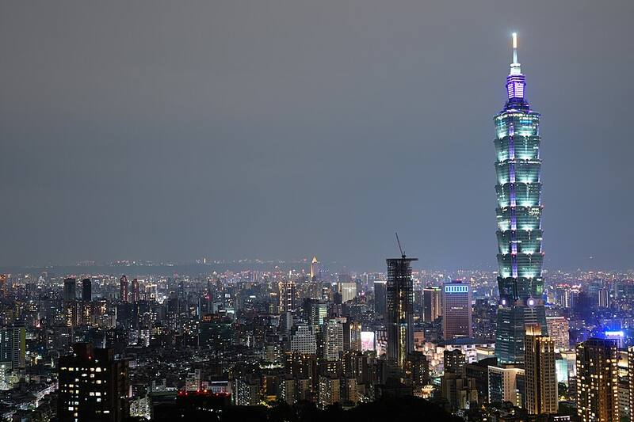
台北101
18:00–20:00曾经的世界第一高楼，造型像竹节，是台北的地标。可以登上观景台俯瞰全城，也可以只在楼下的商场吃饭、逛街。
特点
- 外观好看的角度很多，象山、观景台、市区的街角都是机位
- 楼内有一个供游客参观的风阻尼器（视开放情况）
项目
- 登观景台看夜景，要的话提前买票
- 在商场用餐，附近有不少台北老牌餐厅
- 在楼下广场拍夜景
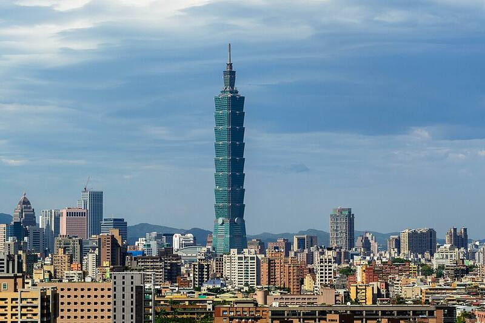
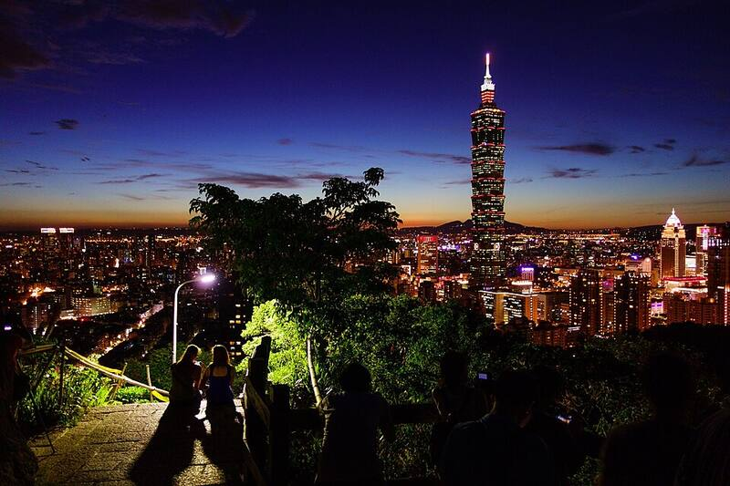
第 3 天 · 高铁到台中
台北 →（高铁）→ 台中
- 08:30台北车站搭高铁到台中（约 1 小时）
- 10:00到台中，行李先寄存
- 10:30彩虹眷村（早到人少）
- 12:00午餐
- 13:30审计新村
- 15:30国立台湾美术馆
- 17:30入住旅馆
- 18:30逢甲夜市
彩虹眷村
10:30–11:30一位退伍老兵在眷村面临拆迁时，独自把墙面、地面画满色彩鲜艳的图案，让这个小村子留了下来，成为台中最出片的景点之一。
特点
- 整个村子不大，半小时到一小时就能逛完
- 图案以人物、鸟、动物为主，色彩浓烈
项目
- 拍照，早到人少、光线也好
- 买文创小物，里面的店家会卖相关纪念品
审计新村
13:30–15:00原来是公务员宿舍，现在改造成文创聚落，老房子里开了咖啡馆、小店、手作工坊，周末有市集。
特点
- 日式、洋式混合的老宿舍群，街道很安静
- 小店多是个人经营，特色强
项目
- 逛小店、买手作
- 在老房子里喝咖啡、吃甜点
- 周末碰到市集会更热闹
国立台湾美术馆
15:30–17:00台湾少数的大型公立美术馆，展览以台湾当代艺术为主，馆前的绿地也是市民散步的地方。
特点
- 建筑本身好看，外立面是石材质感
- 展览常换，进馆前看一下当期展览
项目
- 看当期展览
- 在园区草地和户外装置之间散步
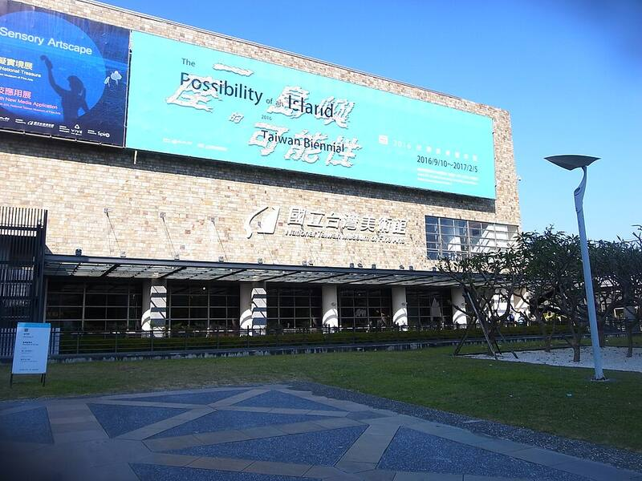
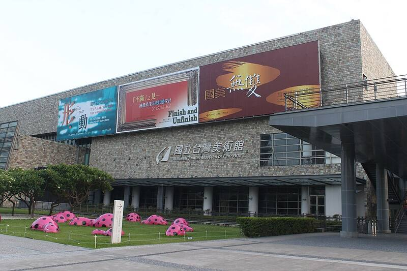
逢甲夜市
18:30–21:00台湾规模数一数二的夜市，紧邻逢甲大学，创意小吃很多，是台中人也会去的夜市。
特点
- 摊位多，小吃分量不大，适合一路吃一路逛
- 不少是新式小吃，翻新频繁
项目
- 先走一圈再决定吃什么
- 试几样台中特色小吃
- 买饮料、甜点边走边吃
第 4 天 · 日月潭，晚上高铁去台南
台中 → 日月潭 → 台中 →（高铁）→ 台南
- 07:30台中高铁站搭客运去日月潭（班次提前查）
- 09:30到水社码头，买游船票
- 10:00玄光寺
- 11:00伊达邵，午餐
- 13:00搭环湖巴士到文武庙
- 14:30回水社，搭客运回台中高铁站
- 17:00台中高铁站搭高铁到台南
- 18:30到台南入住，吃晚饭
日月潭
09:30–15:00（含下面三站）台湾最大的天然湖泊，因为湖形一边像日、一边像月得名，邵族世居于此。湖水随天气和时间变换蓝绿色调。
特点
- 群山环绕，早晨常有薄雾
- 环湖有游船、巴士、自行车道
项目
- 搭游船环湖，按码头分段上下
- 骑自行车环潭一段
- 在水社码头吃小吃
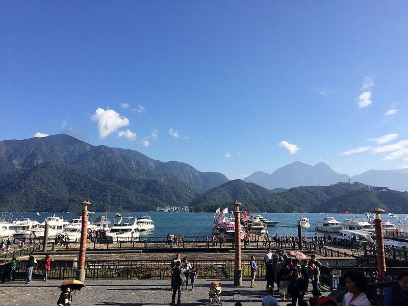
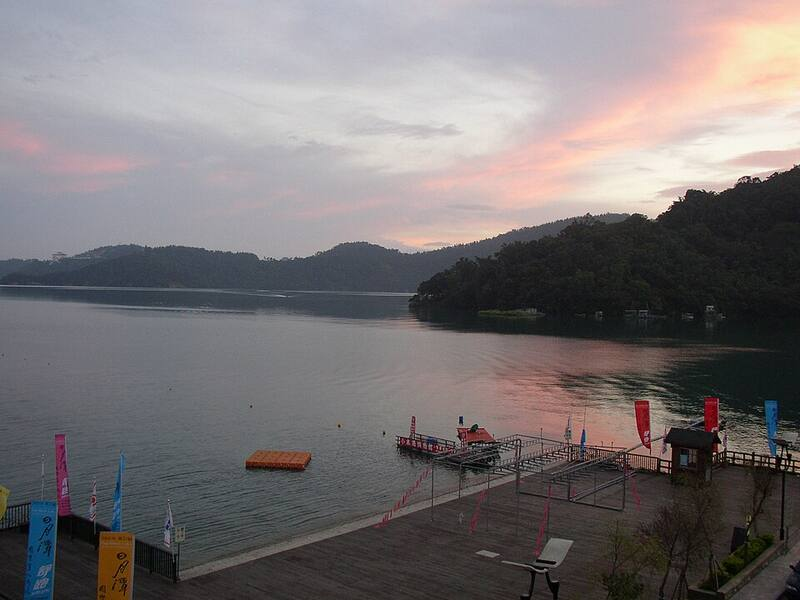
玄光寺
10:00–11:00湖畔的小寺，早年供奉过玄奘大师的灵骨，后来迁往他处。从码头走上来，能把日月潭看得很清楚。
特点
- 寺不大，但位置好，湖景和山景都开阔
- 寺旁有简单的步道通往更高的观景处
项目
- 在平台拍湖景
- 看寺内的陈设
- 顺着步道往上走一小段
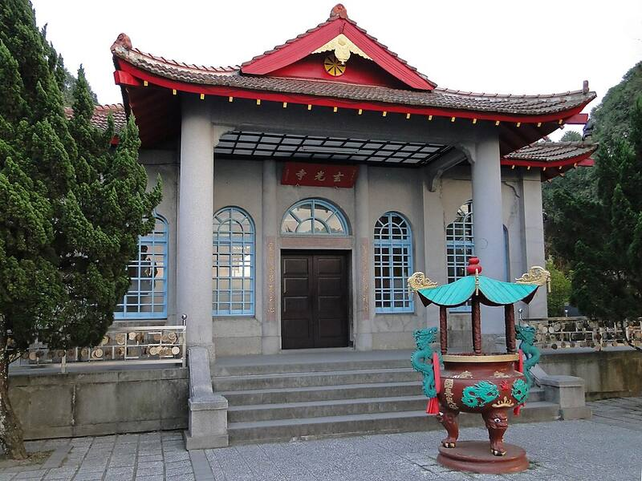
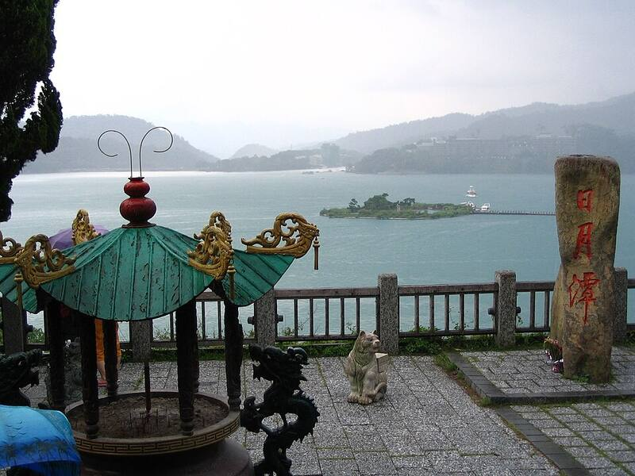
伊达邵
11:00–12:30邵族的聚落，码头周边有不少小吃摊和手工艺品店，是体验原住民文化最方便的一站。
特点
- 码头区人多，但稍微往里走就安静
- 能看到邵族的传统图案和手作
项目
- 吃原住民风味小吃
- 买手作纪念品
- 在码头看游船来往
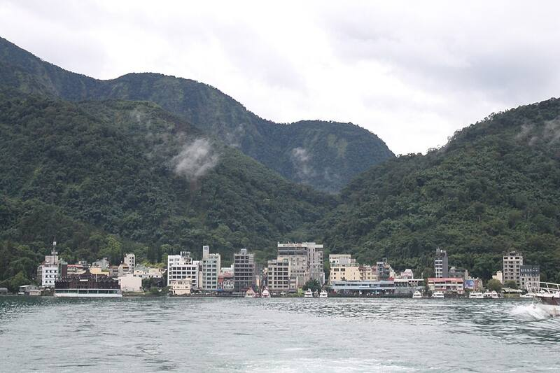
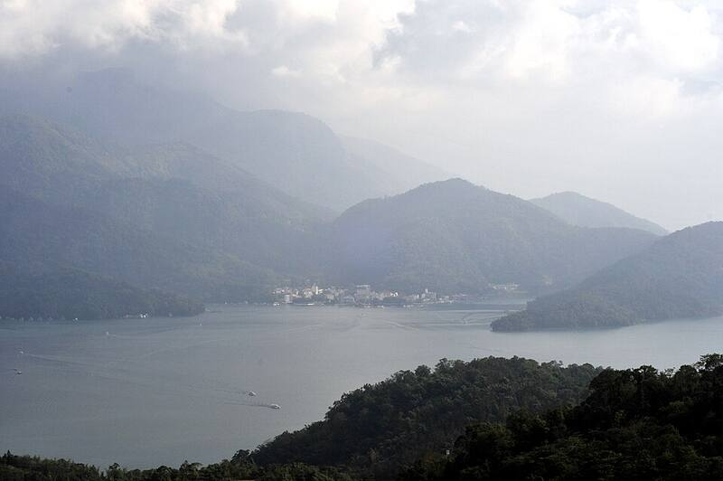
文武庙
13:00–14:30依山面湖而建的大庙，主祀关公和孔子，一整座庙宇群的殿宇层层往上。它不在游船码头上，要从水社搭环湖巴士或骑车过去，别指望下船就到。
特点
- 建筑群规模大，登高视野好
- 镇殿的狮子和大殿的彩绘都值得细看
项目
- 爬到最上层的殿宇看湖景
- 在大殿前拍整座庙和湖
- 逛庙埕里的小摊
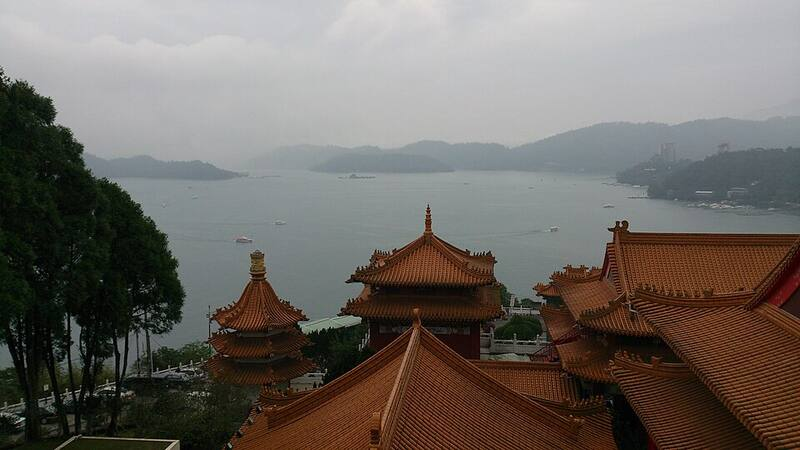
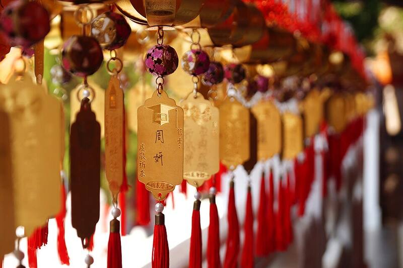
这一天是前半段最赶的一天：日月潭往返加高铁到台南，到旅馆时已经晚了。想松一点，砍掉日月潭，把这天留给台中本身，晚上不用赶车。
第 5 天 · 台南，傍晚到高雄
台南 →（台铁／高铁）→ 高雄
- 08:30赤崁楼
- 10:00祀典武庙
- 10:40大天后宫
- 11:30神农街，午餐
- 13:30搭公交到安平
- 14:00安平古堡
- 15:15安平树屋
- 16:00德记洋行
- 17:00回台南站，搭车去高雄
- 18:00在高雄入住，放行李
- 19:00驳二艺术特区
- 20:00六合夜市
赤崁楼
08:30–09:30荷兰人在台南建的普罗民遮城遗址，后来经明郑、清代多次修建，现在看到的中式楼阁是清代加盖的。
特点
- 底下的石碑、城基和上面的楼阁，是不同年代叠起来的
- 早上人少，光线好
项目
- 拍楼阁和石碑
- 看园内的荷兰时期城墙遗迹
- 逛园区里的小庭园
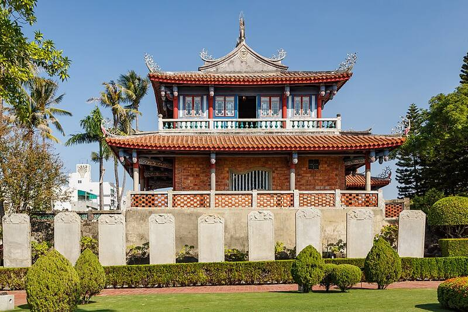
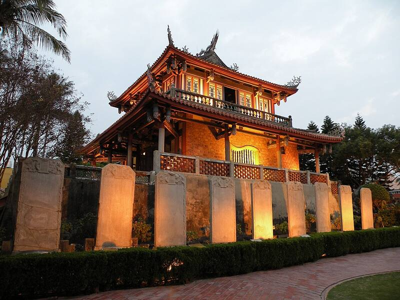
祀典武庙
10:00–10:40台南最早的官祀关公庙，被称为「大关帝庙」，匾额「大丈夫」是庙里最有名的一块。
特点
- 古老的官方祀典庙，建筑规整
- 庙里的匾额和楹联都有历史
项目
- 看「大丈夫」匾
- 拜关公，按路线上香
- 从庙旁的小巷往前走去大天后宫
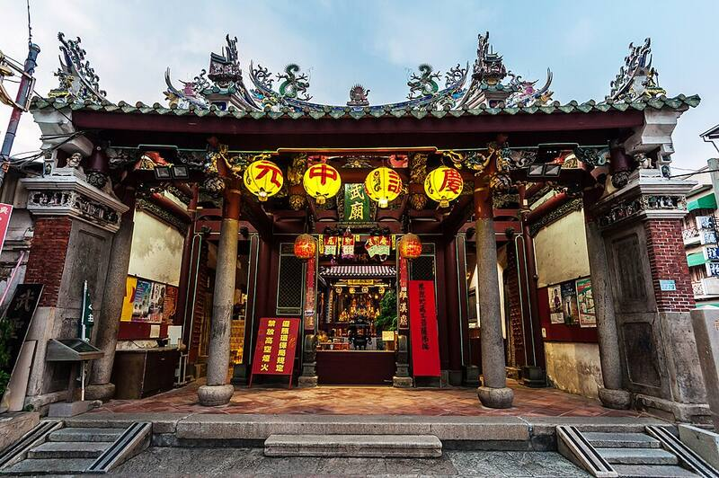
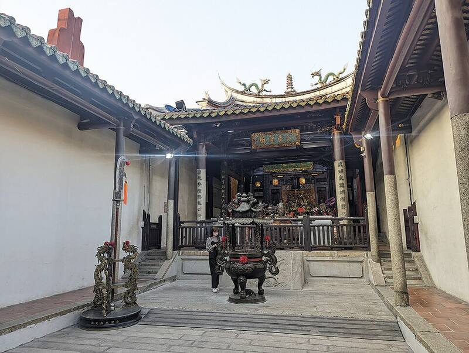
大天后宫
10:40–11:20台南历史最悠久的妈祖庙之一，原是明宁靖王府邸，后改成妈祖庙，是台湾最早由官方祭祀的妈祖庙之一。
特点
- 保留明郑时期的格局
- 香火旺盛，常有信众进香
项目
- 看大殿的雕梁画栋
- 在庙里走一圈，感受台南的庙宇文化
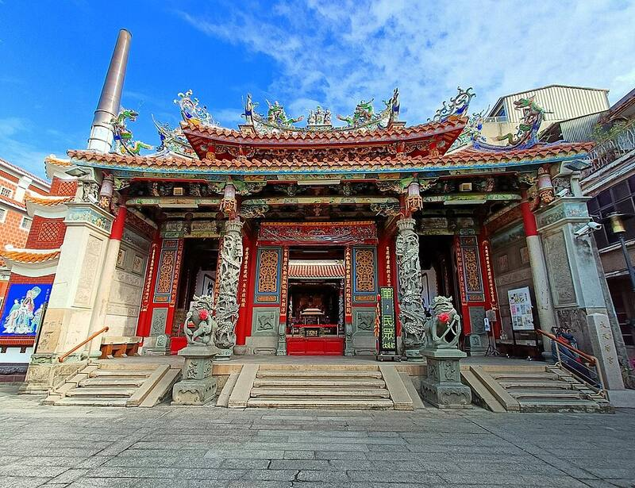
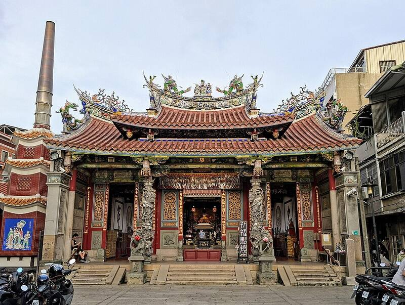
神农街
11:30–13:00保留清代街屋立面的老街，晚上路灯昏黄，比白天更有味道，沿街有小店、咖啡馆和酒吧。
特点
- 窄街两旁是红砖、木门的老房子
- 白天安静，晚上灯笼亮起来后气氛最好
项目
- 午餐在附近吃台南小吃
- 逛小店
- 晚上再来一次，看灯笼
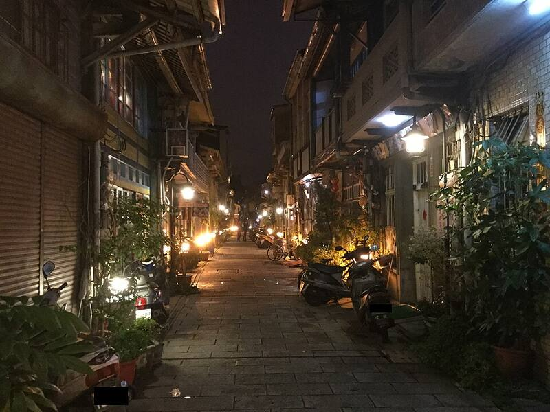
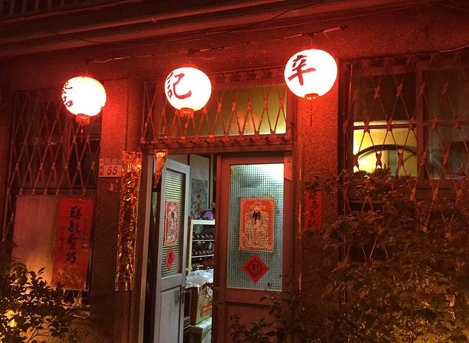
安平古堡
14:00–15:00荷兰人建的热兰遮城，是台湾最早的城堡之一，留下的残垣和展馆讲台湾荷治时期的历史。园内的白色瞭望塔不是荷兰时期的原物。
特点
- 红砖残墙、大炮和老榕树
- 登上瞭望塔可以看到安平一带的景色
项目
- 看展馆里的荷治时期展览
- 在残墙上看红砖的砌法
- 从古堡走去树屋和德记洋行
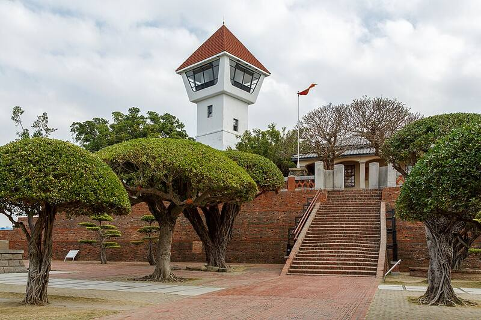
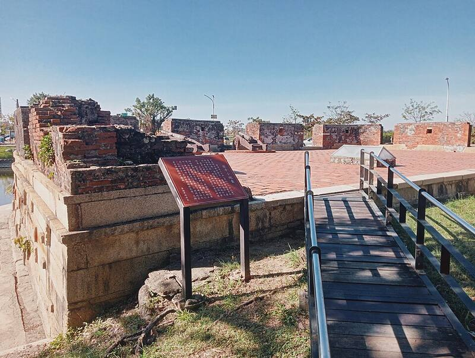
安平树屋
15:15–16:00原来是德记洋行的仓库，荒废后被榕树的气根包满，墙和屋顶都被树根撑开，成为安平最有名的奇景。
特点
- 树根从屋顶垂到地面，把整栋房子缠住
- 走在木栈道上，树根在头顶和身边
项目
- 沿着栈道一间一间走
- 拍树根和红砖墙的对比
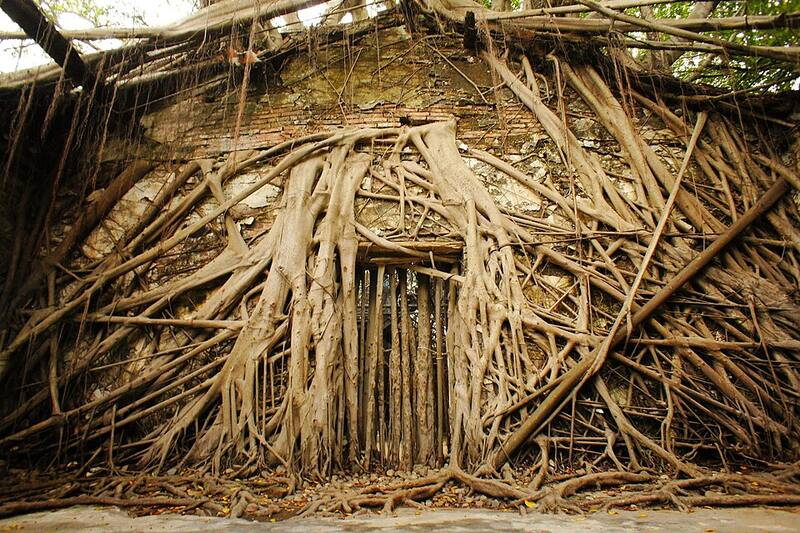
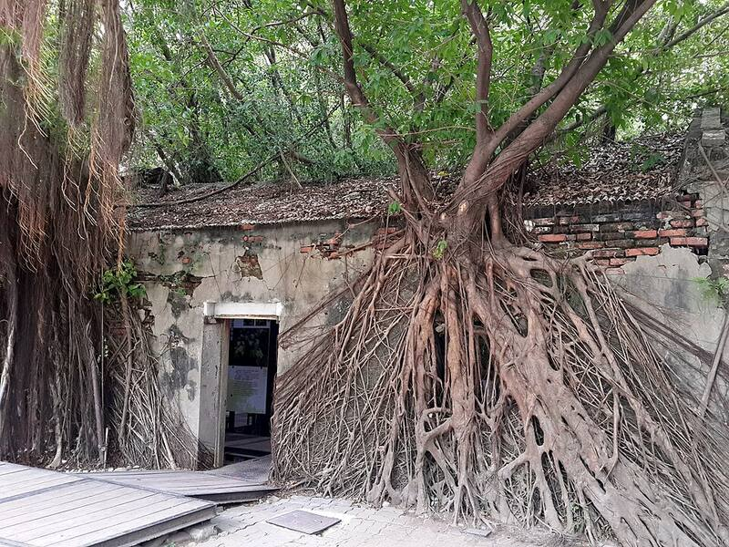
德记洋行
16:00–16:30清末英国商人的洋行旧址，白色拱廊建筑，如今是展馆，讲安平当时的贸易和洋行历史。
特点
- 白色拱廊是拍照的重点
- 与树屋相邻，一起逛最省事
项目
- 看展览，了解安平的贸易史
- 在拱廊里拍照
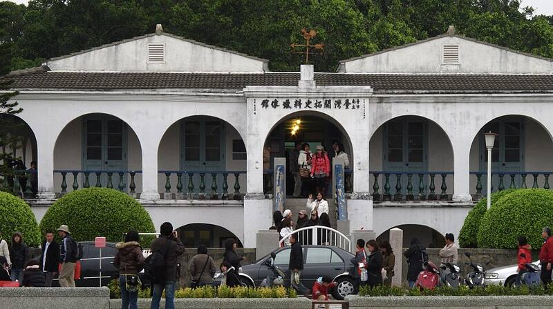
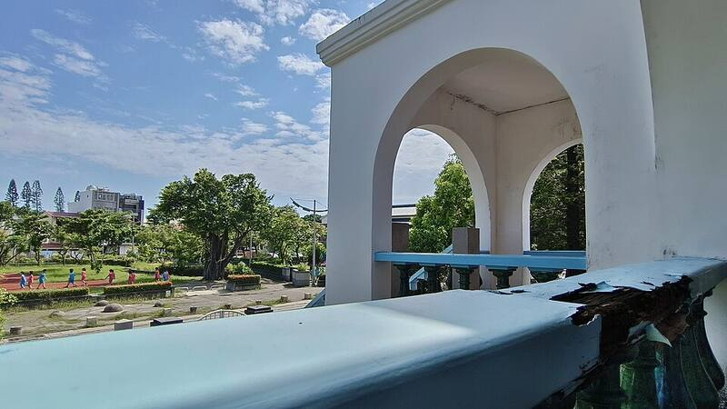
驳二艺术特区
19:00–20:00旧仓库和码头改造的艺文园区，户外有大型装置、展览空间，晚上灯光很好看，周边有骑行道。
特点
- 红砖仓库、铁道和装置艺术混在一起
- 晚上灯光、天际线适合散步
项目
- 看展览
- 在园区散步，找装置艺术拍照
- 骑自行车逛园区
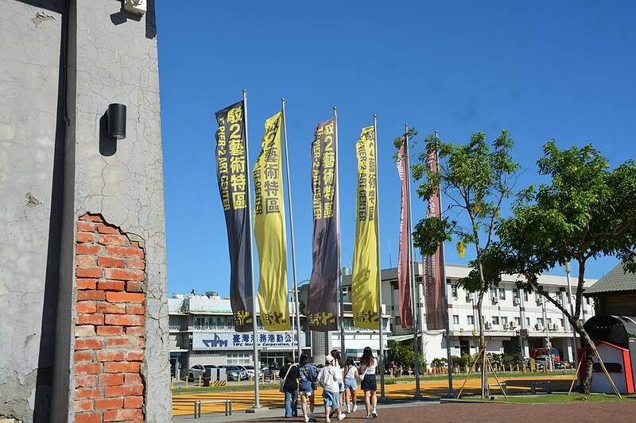
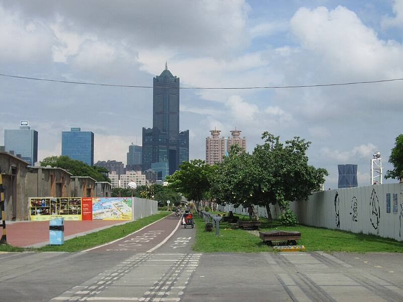
六合夜市
20:00–21:30高雄历史最悠久的观光夜市之一，紧邻美丽岛站，海鲜、木瓜牛奶、台南式小吃都有。
特点
- 摊位集中，一条街走得完
- 很多店家做游客生意，但小吃口味扎实
项目
- 吃海鲜、木瓜牛奶
- 小吃店里点几样，不用一次吃饱
- 吃完直接搭捷运回旅馆
后半段 · 自驾（南 → 东海岸 → 台北）
从高雄取车开始，到台北或桃园机场还车。路线是一条逆时针的弧：先沿屏鹅公路到垦丁，再走南回公路翻中央山脉到台东，之后沿东海岸向北，最后过苏花改和雪山隧道回到台北。四天的车程不算短，每天都排了缓冲。
第 6 天 · 高雄 → 垦丁 → 台东
高雄取车 → 屏鹅公路 → 垦丁 → 南回公路 → 台东
- 08:00在高雄取车（提前问好门市几点开门）
- 08:15出发，走屏鹅公路
- 10:15白沙湾
- 11:00鹅銮鼻灯塔
- 12:15龙磐草原
- 13:00午餐（恒春）
- 14:15从恒春出发，走南回公路去台东
- 17:15抵达台东，入住
白沙湾
10:15–11:00垦丁北边的一片沙滩，沙细、水色清，是垦丁地区很受欢迎的海滩之一。
特点
- 沙细、浪不大的时候水色很清
- 停车方便，适合短暂停留
项目
- 在沙滩上散步、拍照
- 脱鞋踩水（11 月水偏凉，视天气）
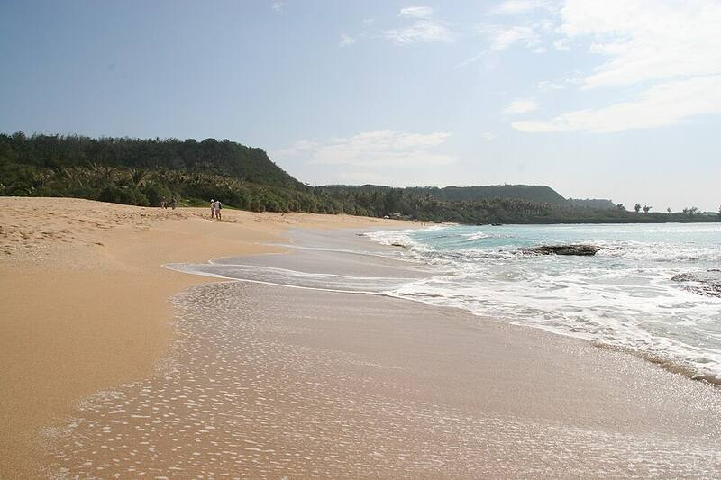
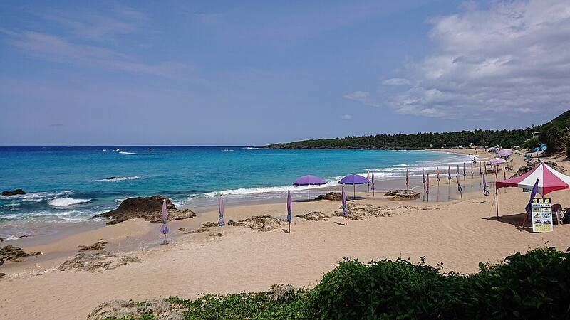
鹅銮鼻灯塔
11:00–12:00台湾本岛南端的灯塔，白色塔身立在草地上，周围是珊瑚礁地形的步道。
特点
- 白色灯塔和绿草地的反差
- 园区步道平缓，走完一圈不累
项目
- 绕灯塔拍照
- 沿着园区步道看海景
- 买纪念品
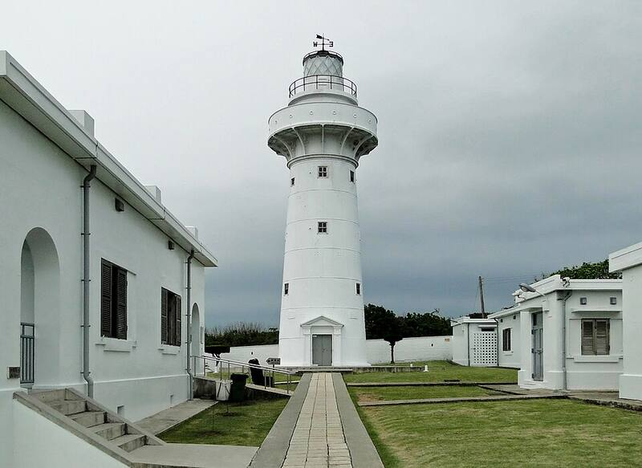
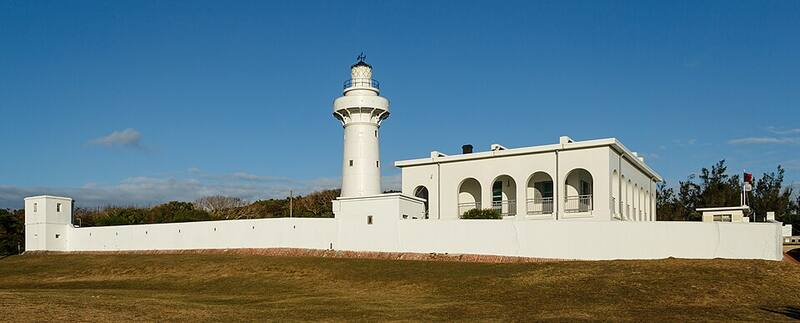
龙磐草原
12:15–13:00位于恒春半岛东侧的开阔草原，一边是太平洋，一边是起伏的草地，适合停下来看海。
特点
- 海天一线的视野，风大
- 没有高大的遮挡物，视野很开阔
项目
- 沿着公路边停车眺望太平洋
- 拍草原和公路
- 风大要抓好帽子
南回公路
14:15–17:15（沿途）从恒春半岛翻过中央山脉最南的一段，连接屏东和台东，沿途山海交错。
特点
- 弯道多、坡陡，是全天最需要专心开的一段
- 沿途有观景点，可以顺路停车看海
项目
- 沿着公路一路开，看山海交错
- 视天气和体力在观景点短暂停留
- 天黑之前务必开完这段
第 7 天 · 台东 → 花莲（台 11 线）
台东 → 三仙台 → 长虹桥 → 石梯坪 → 花莲
- 08:30台东出发，出发前把油加满
- 09:30三仙台
- 11:30长虹桥
- 12:00石梯坪，午餐（丰滨渔港一带）
- 14:00出发去花莲
- 16:30到花莲，入住
- 18:00晚饭，逛夜市
三仙台
09:30–10:30台东成功海岸外的一座小岛，一座一座拱桥连着小岛，八个拱形的桥身是拍照主角。
特点
- 八拱桥是地标
- 岛上有步道，可以走一圈
- 日出时间光线最好
项目
- 走过八拱桥上岛
- 沿着岛上步道走一圈
- 在海边看浪
长虹桥
11:30–12:00花东海岸线上横跨秀姑峦溪出海口的红色拱桥，是花莲丰滨一带的地标。
特点
- 红色的拱桥衬着绿色山坡
- 河口和太平洋在桥下汇合
项目
- 在桥边拍照
- 走过桥看河口
- 看秀姑峦溪泛舟的终点（泛舟需另行预约）
石梯坪
12:00–13:00花莲丰滨的海岸地形景点，海蚀平台和岩礁是主角，海岸线上有步道。
特点
- 海蚀平台和岩礁，地形有特色
- 海浪拍岸，注意安全
项目
- 沿着步道走一段
- 看海蚀平台和岩礁
- 在渔港边吃海鲜
台 11 线海岸公路
08:30–16:30（沿途）台东到花莲的海岸公路，一侧是太平洋，一侧是海岸山脉，路况好、车不多，是整趟自驾里风景最集中的一段。
特点
- 海天一线，一路都可以停车
- 加油站不多，要提前加油
项目
- 沿线随便停，拍海景
- 视体力选择景点
- 天黑之前到花莲
池上（备选：花东纵谷）
备选花东纵谷里的稻米产地，大片稻田、笔直的伯朗大道，是一路向北的另一种选择。
特点
- 稻田和山的组合
- 路更直，车更多，但没有海景
项目
- 在伯朗大道骑自行车或散步
- 吃池上便当
第 8 天 · 太鲁阁，苏花改回台北
花莲 → 太鲁阁 → 苏花改 → 宜兰 → 雪山隧道 → 台北
- 07:30花莲出发去太鲁阁
- 08:00砂卡礑步道
- 09:30燕子口
- 10:45长春祠
- 12:00出发，走苏花改去宜兰
- 14:00在宜兰午餐
- 15:00走雪山隧道回台北
- 16:30到台北入住，（视航班决定是否先还车）
砂卡礑步道
08:00–09:00太鲁阁的溪谷步道，沿着砂卡礑溪走，一侧是峭壁，一侧是溪水，路平缓，一小时内能走完。
特点
- 溪水颜色偏青绿
- 步道平缓，适合清晨散步
项目
- 沿步道走一段再折返
- 看溪谷的大理石岩壁
燕子口
09:30–10:15太鲁阁峡谷里的一段峭壁，岩壁上有一个个壶穴，传说是燕子筑巢的地方，因此得名。
特点
- 峭壁壶穴
- 步道沿山壁开凿，视野很好
项目
- 沿步道走一段
- 拍峡谷和岩壁
- 记得戴安全帽（视当天规定）
长春祠
10:45–11:30为纪念修筑中横公路的殉职人员而建，建在山壁上的中式祠堂，下面是一道瀑布。
特点
- 祠堂、瀑布、峡谷三者同框
- 建在山腰，需要走一段阶梯
项目
- 看祠堂和下方瀑布
- 拍峡谷和祠堂的全景
苏花改
12:00–14:00（沿途）花莲到宜兰的苏花公路改善路段，大部分是隧道和桥梁，是现在走东海岸回台北的主线。
特点
- 隧道多、路面稳
- 遇到落石、大雨会封路
项目
- 沿路看海岸悬崖
- 在服务区休息、吃饭
- 出发前看公路局即时路况
雪山隧道
15:00–16:30（宜兰到台北）连接宜兰和台北的长隧道，过了它就回到台北盆地。
特点
- 全程隧道，限速要注意
- 出隧道就是坪林、新店
项目
- 保持车距，不要变换车道
- 在隧道里看清标志
第 9 天 · 还车，回新加坡
台北 → 桃园机场（还车）
- 视航班国际航班起飞前约 3 小时到机场，往回倒推
- 提前在第 8 天晚上到台北后先还车，第二天搭机捷去机场，最稳
- 或航班晚的话，早上把车开到桃园机场附近的门市还
无论哪种，异地还车要在订车时就告诉租车公司，不要等到车上路了才改。
自驾实用信息
租车：高雄取车、桃园还车
这种「甲租乙还」（异地还车）在台湾主流租车公司都有，比较常见的是和运租车和格上租车。几个共通的做法：订车时就选取车门市和还车门市；多数公司要求至少提前一天预约，临时改还车地点会被加收紧急处理费；春节、连假等旺季，不少门市会关闭这项服务；具体的服务费、免收条件年年在变，以官网下单当天的页面为准，这里不写死数字。
驾照与证件（大陆护照持有人）
台湾的租车规定是：自己开车的人要持有本国驾照或国际驾照。大陆驾照在台湾不能直接用来开车或租车，必须在台换成台湾驾照，对短期游客不现实。已经拿到新加坡驾照的话，一般的做法是新加坡驾照加新加坡出具的国际驾照（IDP），再加护照、信用卡一起带；国际驾照必须和本国驾照同时出示才有效。
这里有个没有官方明说的灰色地带：以大陆护照入境、拿外国驾照加国际驾照租车，规则有依据，但公开资料大多是几年前的，租车公司在柜台怎么执行也不完全一样。订车前一定打电话或在线客服问清楚：说明护照类型和驾照类型，问他们认不认。
在台湾开车
- 靠右行驶，方向盘在左，和中国大陆一致；和新加坡相反，需要适应。
- 机车很多：路口、红绿灯前机车会从两侧钻出来，转弯前看后视镜和盲区。
- 测速照相和区间测速很多，限速标示要看清；超速罚单会由租车公司代缴后从信用卡扣款。
- 导航用 Google Maps 就够，山区信号弱的路段先下载离线地图。
- 保险：基本保险之外，建议加买免责或全险，山路擦碰的概率比平路高。
- 加油：东海岸和南回公路加油站稀疏，油量低于一半就找站加。
实用信息
交通（前半段）
市区靠捷运和公交，买一张交通卡（如悠游卡）通用于捷运、公交和多数便利店，比每次买票方便很多。城市之间靠台铁或高铁，高铁速度快但票价也高，建议提前在高铁官网或 App 订票，尤其是周末和连假前后；台铁的班次和时刻表查台铁官网。
入境与证件
台湾的入境规定因护照和国籍不同差异很大，有的地区免签，有的需要另外申请入境许可证，出发前务必查询台湾移民署官网的最新规定，不要照搬别人的经验。
季节与穿着
全年都能去，秋季（10–11月）气候通常最稳定舒适；夏秋之交要留意台风信息，东海岸和南回公路遇到台风天气会封路，自驾的几天最好留一天余裕。
网络与语言
机场可租随身 WiFi 或买当地 SIM 卡／eSIM，市区连锁店与景点大多支持中文沟通，标示也以中文为主，语言上不会有太大障碍。
住宿建议
台北选中山、西门或忠孝复兴一带，捷运沿线出入方便；台中可考虑火车站或朝马商圈；台南、高雄各订一晚市区旅馆；自驾段的台东、花莲建议订带停车位的旅馆，订之前确认停车是否另收费。
节奏建议
这版在两个地方最容易吃力：第 4 天（日月潭加夜间高铁）和第 6 天（高雄到台东的长车程）。想放慢，优先砍日月潭；第 6 天可以只做垦丁一两个点，剩下的留给晚上休息。想加码，可以把台东或花莲多住一晚，纵谷慢慢开。
前半段把西部最经典的几座城市用公共交通走完，后半段把车交给自己，绕过最难到达的那一半台湾。具体怎么排，还是那句话——按自己的体力和喜好调整，攻略是拿来用的，不是用来照抄的。